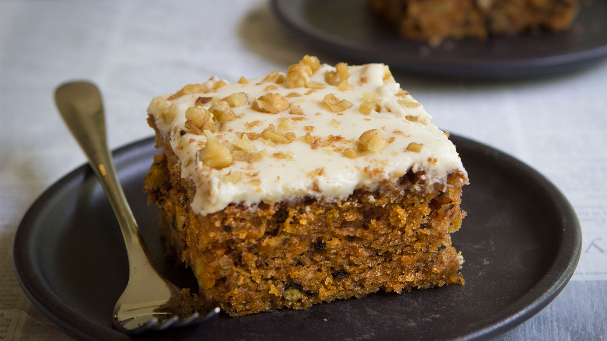

So soft and moist...I'm crying (over how amazing it tastes).
Ingredients
- 2 2/3 cups of flour
- 1 1/2 tsps baking powder
- 1 1/2 tsps baking soda
- 1 tsps salt
- 1 1/2 tsps cinnamon
- 1 tsps nutmeg
- 1/2 teaspoon all-spice
- 4 cups (500 grams carrots, shredded- roughly 6-8
- 1/4 cup (50 milliliters) lemon juice
- 2 cups (200 grams granulated sugar
- 1 1/4 cup (300 milliliters) flavorless oil (such as canola or vegetable)
- 4 eggs
- 1-1/2 teaspoon vanilla extract
- 1 cup (130 grams walnuts or pecans, chopped - (you can increase the quantity to 1-1/2 cups if you like)
Cream Cheese
- 1/4 cup butter, softened
- 4 ounces (100-115 grams cream cheese at room temp.
- cups confectioners' (icing) sugar
- 2 lime or lemon, juiced
- 1/2 teaspoon vanilla extract
- 2 cup walnuts, chopped mixed with 1 teaspoon ground cinnamon
Steps: Carrot Cake
- Preheat the oven to 350 F and grease a 9x13 inch pan with butter.
- In a small bowl, stir together the dry ingredients (flour, baking powder, baking soda, salt, cinnamon, nutmeg and allspice) and set aside.
- In another bowl, mix the carrots with the lemon juice and set aside.
- In a large bowl, blend the sugar, oil, vanilla and eggs until smooth.
- Add the flour mixture, stirring just to combine.
- Fold in the carrot mixture and nuts. The nuts are optional but highly recommended. You can also add in chocolate chips or raisins if you like.
- Pour the mixture into the prepared pan and bake for 45-60 minutes, or until a toothpick inserted comes out clean. Cool completely before frosting.
Steps: Cream Cheese Frosting
- To make the frosting, blend together the butter, cream cheese, vanilla and lemon juice.
- Gradually add in the confectioners sugar and beat until smooth. The frosting should hold a soft peak when you lift up the whisk/beater.
- I like to garnish the cake with some cinnamon and chopped nuts, but this is totally optional.
You love it don't you! Haha!